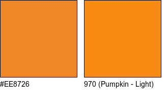
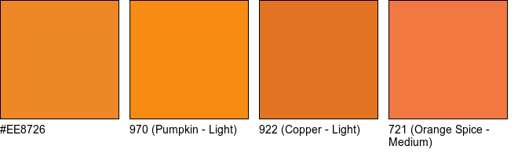
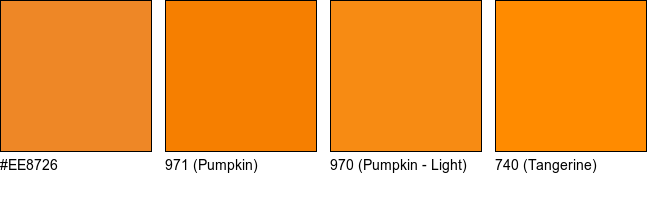
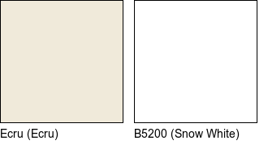

The goal of dmc is to allow you to find the closest DMC embroidery floss colour(s) for a given colour, as well as access colour (hex, RGB) information about DMC colours.
If you’d like to use dmc without having to install the package (or R!), there is a Shiny app as well (in its own package, dmcapp).
Example
Say I’m interested in finding the closest DMC floss colour for the background colour of the dplyr package’s hex logo 😈.
I can look up the hex code for this colour via a site like HTML Color Codes. The hex code is “#EE8726”.
Then, I can use dmc() to find the closest DMC floss for this colour:
library(dmc)
dplyr_background <- "#EE8726"
dmc(dplyr_background)
#> # A tibble: 1 x 6
#> dmc name hex red green blue
#> <chr> <chr> <chr> <dbl> <dbl> <dbl>
#> 1 970 Pumpkin - Light #F78B13 247 139 19
I can choose to show more than one matching colour:
dmc(dplyr_background, n = 3)
#> # A tibble: 3 x 6
#> dmc name hex red green blue
#> <chr> <chr> <chr> <dbl> <dbl> <dbl>
#> 1 970 Pumpkin - Light #F78B13 247 139 19
#> 2 922 Copper - Light #E27323 226 115 35
#> 3 721 Orange Spice - Medium #F27842 242 120 66
And to turn off the visualization of the colours:
dmc(dplyr_background, visualize = FALSE)
#> # A tibble: 1 x 6
#> dmc name hex red green blue
#> <chr> <chr> <chr> <dbl> <dbl> <dbl>
#> 1 970 Pumpkin - Light #F78B13 247 139 19By default, dmc() uses Euclidean distance to find the closest floss colour. The method can be changed to be one of “euclidean”, “cie1976”, “cie94”, “cie2000”, or “cmc”. For example:
dmc(dplyr_background, n = 3, method = "cie94")
#> # A tibble: 3 x 6
#> dmc name hex red green blue
#> <chr> <chr> <chr> <dbl> <dbl> <dbl>
#> 1 971 Pumpkin #F67F00 246 127 0
#> 2 970 Pumpkin - Light #F78B13 247 139 19
#> 3 740 Tangerine #FF8B00 255 139 0
If I want to go the other way and just find the hex/RGB information for a given DMC floss, I can use undmc(). By default, this visualizes the DMC floss:
undmc(c("Ecru", "B5200"))
#> # A tibble: 2 x 6
#> dmc name hex red green blue
#> <chr> <chr> <chr> <dbl> <dbl> <dbl>
#> 1 Ecru Ecru #F0EADA 240 234 218
#> 2 B5200 Snow White #FFFFFF 255 255 255
Again, the visualization can be turned off:
undmc(310, visualize = FALSE)
#> # A tibble: 1 x 6
#> dmc name hex red green blue
#> <chr> <chr> <chr> <dbl> <dbl> <dbl>
#> 1 310 Black #000000 0 0 0undmc() mostly just takes the DMC floss number, except in cases where there isn’t one (e.g., Ecru).
A full list of floss colours in the package is available via floss:
floss
#> # A tibble: 454 x 6
#> dmc name hex red green blue
#> <chr> <chr> <chr> <dbl> <dbl> <dbl>
#> 1 3713 Salmon - Very Light #FFE2E2 255 226 226
#> 2 761 Salmon - Light #FFC9C9 255 201 201
#> 3 760 Salmon #F5ADAD 245 173 173
#> 4 3712 Salmon - Medium #F18787 241 135 135
#> 5 3328 Salmon - Dark #E36D6D 227 109 109
#> 6 347 Salmon - Very Dark #BF2D2D 191 45 45
#> 7 353 Peach #FED7CC 254 215 204
#> 8 352 Coral - Light #FD9C97 253 156 151
#> 9 351 Coral #E96A67 233 106 103
#> 10 350 Coral - Medium #E04848 224 72 72
#> # … with 444 more rowswhere the values in floss[["dmc"]] are all that can be passed to undmc().

{kind=link}